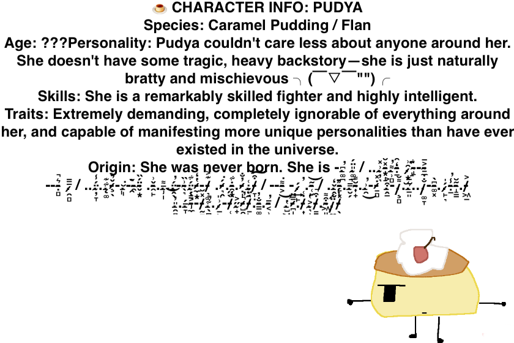

Pudya — Character Profile & Lore 🍮

Meet Pudya, the studio mascot! 🐾
Hi! This is my solo studio; I simply share my drawings, animations, and memes here. I hope someone finds inspiration on my site! 🍮

Pudya — Character Profile & Lore 🍮
Meet Pudya, the studio mascot! 🐾